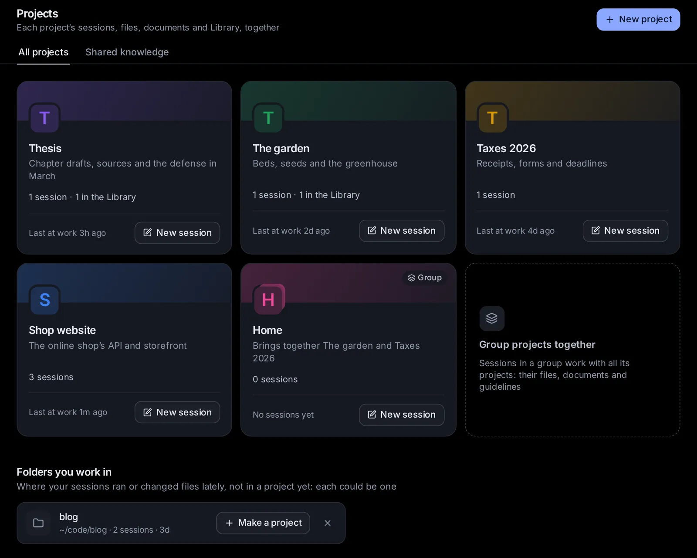

-
01
Say what you need
Pick an agent, a model and a folder, or let Hydor make a folder for the task. Type it, attach files, or just talk.

-
02
Follow every step
Commands fold into small boxes with plain names, each a click away from its output. Commands and edits wait for your Allow, or go ahead on their own if you let them.

-
03
Get answers you can check
Agents search and read the web for you, and each reply shows the pages it cites. Comparisons and reports come as files to open or download.

-
04
Make it a routine
Turn a follow-up into a scheduled task, and Hydor runs it for you, every morning or every Monday, and tells you what it found.

-
05
Keep it together
Projects hold a job's sessions, files, documents, memory and guidelines in one place, like Projects in ChatGPT or Claude, but on your own computer.
